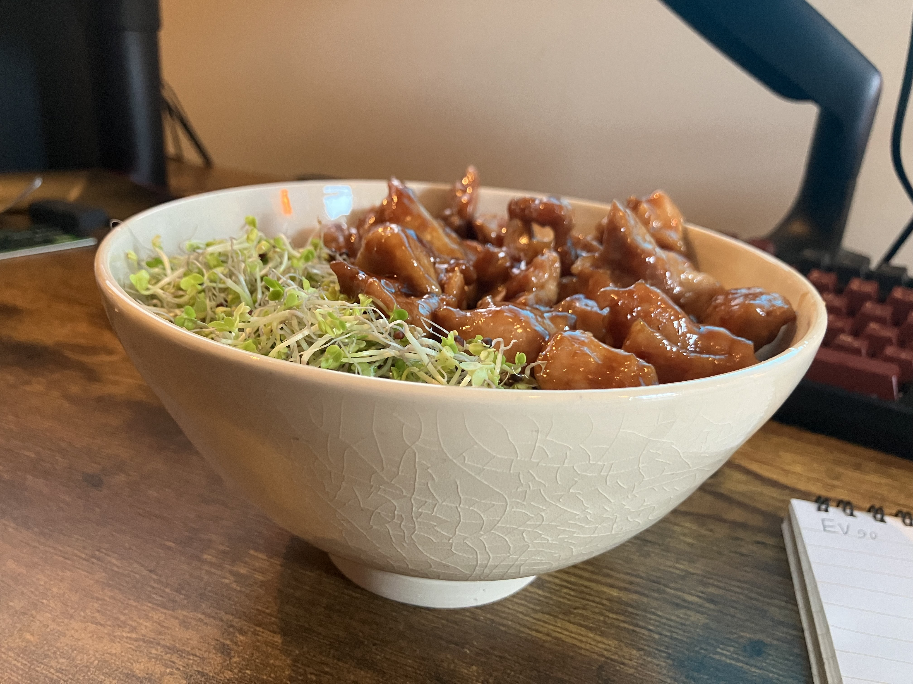

Hoisin Rice Bowl

Description
This is a quick and delicious meal that can be a go to high protein lunch or dinner. As long as you have a rice cooker the only real cooking part of this recipe is the chicken. I would recommend experimenting and adding whatever you want to this that will fit the flavor profile. You could have this for lunch every single day.
Equipment Needed
Ingredients
- A chicken breast cut into bite size pieces
- Hoisin sauce
- Bean sprouts
- Kewpie mayo
- Cooked white rice
- Cooking oil of your choice
Steps
- Cook your chicken pieces in a pan with some oil on medium heat until they have some color but are not too tough. Try not to crowd the pan.
- Add a large spoonful of hoisin sauce and toss to coat everything. Bring to low-medium heat and toss occasionally until the sauce has caramelized a little bit.
- Put the chicken over a bowl of rice and add a fist full of bean sprouts next to it on top.
- Drizzle some kewpie mayo on top and either stir to combine everything or leave as is. Bone apple teeth.